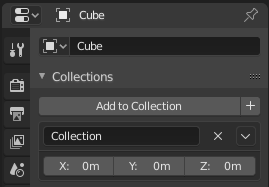

Collections¶
There can be many objects in a scene: A typical stage scene consists of furniture, props, lights, and backdrops. Blender helps you keep everything organized by allowing you to group like objects together. Objects can be grouped together without any kind of transformation relationship (unlike parenting). Collections are used to just logically organize your scene, or to facilitate one-step appending or linking between files or across scenes.
Collections Panel¶
Reference
| Mode: | Object Mode |
|---|---|
| Panel: |

Collections panel.
All collections that an object has been assigned to are listed in the Properties editor .
- Add to Collection
- Adds the selected objects from a collection. A pop-up lets you specify the collection to add to.
- New
+ - Creates a new collection and adds the selected object(s) to it.
- Name
- To rename a collection, simply click in the collections name field.
- Remove
X - To remove an object from a collection,
find the name of the collection from which you wish to remove the object,
and click the
Xbutton to the right of the collection name. - Specials
- Unlink Collection, Select Collection, Set Offset From Cursor
- Offset
- Applies a spatial offset of the instanced collections from the original object’s origin.
See also
Appending or Linking Collections
To append a collection from another blend-file, consult this page. In summary, Select a blend-file and then the collection.